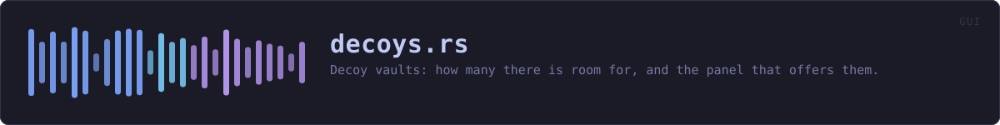

crates/veilvoice-gui/src/decoys.rs
veilvoice-gui · 216 lines · read the source here · or on GitHub
Decoy vaults: how many there is room for, and the panel that offers them.
What a decoy is worth, said plainly
A decoy is a directory that is the same shape as the real vault, holding encrypted nonsense under a key that was thrown away the moment it was written. Somebody who takes the disk sees several vaults and cannot tell which one holds anything: the names say nothing, the sizes are the same, and cracking one yields bytes that parse as nothing, which looks exactly like a wrong passphrase.
What that buys is the cost of searching. It does not hide the real vault from somebody watching the screen while it is opened, from somebody who has already got into the running program, or from a backup taken before the decoys were made. The panel says all three where the button is, because a defence somebody misjudges is worse than one they do not have.
Why the count is measured
A number chosen here would be a guess dressed as advice: nine decoys is careless on a nearly full laptop and timid on a four-terabyte disk. So the count comes from the room actually free where the vault lives, and where the system will not say how much that is, the panel says so instead of quietly inventing a figure.
WHAT THIS FILE CONTAINS
216 lines defining 3 functions (2 public), 1 type and 2 constants. Everything below is read out of the source, so it cannot disagree with the code.
The types it owns.
struct Adviceline 48 · What to offer, and on what evidence.
What happens when it runs. These are the ways in: public, and nothing else in this file calls them, so they are what an outside caller reaches first.
panelline 96 · The panel, under the listing in the Browser.
reachesadvise,counted_vaults
WHAT CALLS WHAT
The functions this file defines, and the calls between them. An edge means the callee's name appears, called, inside the caller's body. This is a syntactic reading, not a type-resolved one.
The same graph as Mermaid source
%%{init: {"theme":"base","themeVariables":{"background":"#1a1b26","primaryColor":"#1f2335","primaryTextColor":"#c0caf5","primaryBorderColor":"#7aa2f7","secondaryColor":"#16161e","tertiaryColor":"#16161e","lineColor":"#737aa2","textColor":"#c0caf5","mainBkg":"#1f2335","nodeBorder":"#7aa2f7","clusterBkg":"#16161e","clusterBorder":"#2f3549","fontFamily":"ui-monospace, SFMono-Regular, Consolas, monospace","fontSize":"14px"}}}%%
flowchart TD
n_advise["advise<br/>line 65"]
n_panel(["panel<br/>line 96"])
n_counted_vaults["counted_vaults<br/>line 206"]
n_panel --> n_advise
n_panel --> n_counted_vaults
click n_advise href "https://github.com/tilas01/veilvoice/blob/main/crates/veilvoice-gui/src/decoys.rs#L65" "open the source"
click n_panel href "https://github.com/tilas01/veilvoice/blob/main/crates/veilvoice-gui/src/decoys.rs#L96" "open the source"
click n_counted_vaults href "https://github.com/tilas01/veilvoice/blob/main/crates/veilvoice-gui/src/decoys.rs#L206" "open the source"
classDef entry fill:#1f2335,stroke:#7aa2f7,color:#c0caf5
class n_panel entry
classDef api fill:#1f2335,stroke:#7dcfff,color:#c0caf5
class n_advise api
classDef helper fill:#1f2335,stroke:#bb9af7,color:#c0caf5
class n_counted_vaults helperThis site loads no third-party script, so it cannot run Mermaid; the diagram above is the same nodes and edges drawn by the generator instead. GitHub renders the source below directly.
ITEMS
| Item | Line | Documentation |
|---|---|---|
SHARE const | 37 | Never more than this share of what is free. |
MOST const | 44 | Never more than this many, however much room there is. |
Advice pub struct | 48 | What to offer, and on what evidence. |
advise pub fn | 65 | Work out what to offer from the vault's shape and whatever the disk says. |
panel pub fn | 96 | The panel, under the listing in the Browser. |
counted_vaults fn | 206 | "one vault" or "four vaults", so the panel does not say "1 vaults". |